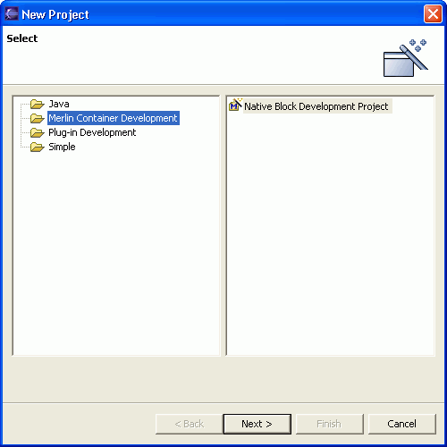

In MerlinStudio a block is equivalent to an eclipse project. In order to create a block you have to create an eclipse project with a special project nature.
To create a new block you have to follow the following steps:
1. Select the menu item File > New > Project.... to open the New Project wizard

2. Enter the project name. This is done exactly the same way, as you do it with normal Java projects

3. In the next page you can select the type of project you would like to start with.

With the current version of MerlinStudio there are only a few types as example projects avalilable. This will changed in future versions so that one has a full range of ready to use blocks / components. Note: Those project types are fully customizable, so that you may create your own in detail projects or adopt them to your enterprise standards. How to customize the project types is described here.
4. If you now press "Finish" the complete Project - aligned with your selected type - will be created for you. You should now see a new project with the following structure: